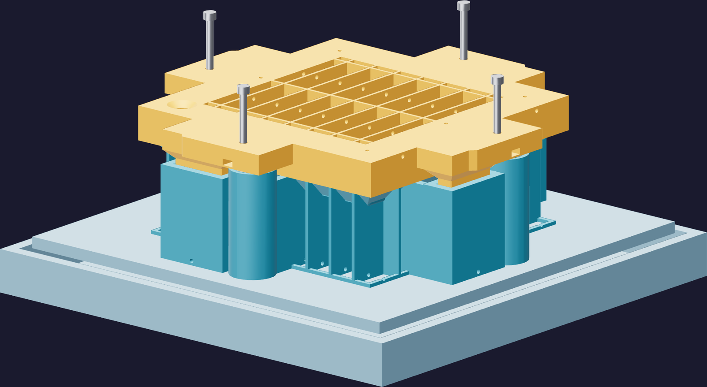

Working time9
Vacuum the filled mold
One more cycle, on the closed mold, to pull the air out of the corners the pour could not reach. It needs the ports open, room above the dish for foam, and your hand on the valve.
- Into the chamber on its shelf, with the catch tray under it and the backing-air exits still open. Those channels are how chamber pressure gets inside the printed structure; covered, the mold fights the cycle.
- Pull down and watch the dish. The silicone in the throat and the vents will rise and foam. That is the trapped air leaving.
- Admit air slowly. A fast let-up drives foam back into the cast instead of collapsing it.
- Inspect the fill level and top up through the pour throat while the silicone is still workable. Expect the level to have dropped.
- Repeat if the dish is still foaming. Stop while you still have working time to top up afterwards.

⛔ Degassed is not the same as full
An underfilled mold does not become complete because it has been through the chamber. The
top-up, done while the silicone still flows, is the step that finishes the part. After the
working time it is a short shot and there is no recovery.
Not a pressure vessel
The printed tooling carries no pressure rating. The backing channels equalise it; they do
not make it strong. If the halves visibly move, stop the cycle.